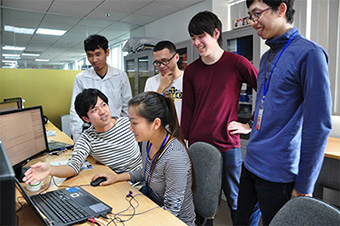
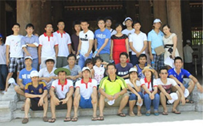
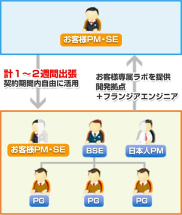
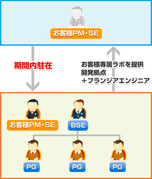
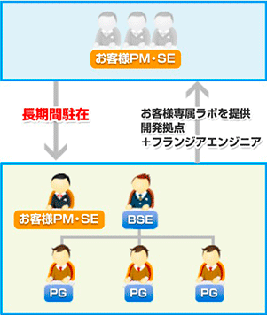
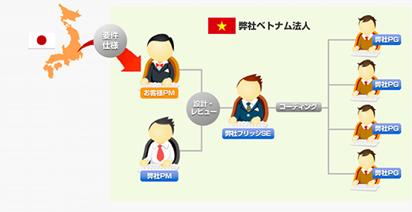

Framgiaの開発スタイルと開発実績
ラボ開発
Framgiaでは従来のオフショアによる受託開発ではなく、ラボ型開発を主にご提案しています。オフショア開発のデメリットは言語や価値観の違いからプロジェクトの開始時にお互いに持っておくべき共通知識の共有に日本人同士の場合よりも時間がかかることが多いので、短期のプロジェクトには向きません。長期間じっくり自社の社員と同じように育ててチームビルディングをしていくようなプロジェクトが向いています。機能毎に工数を計算するよりも長期契約して柔軟に仕様変更などにも対応できるラボ開発が向いています。
ラボ型開発とは？
ラボ型開発とは、お客様の専属開発チームをベトナムの弊社内に作り一定期間の契約を結ぶ形態です。受託開発のように工数計算をして開発を請け負うのではなく、お客様のニーズに合わせた開発チームを長期的にご提供いたします。
ラボ型開発のメリット
ベトナムに子会社を設立することなく、採用・教育・人事マネジメントを弊社に委託しながら、低リスクで自社の開発拠点を持てるのがメリットです。専属エンジニアとしてブリッジSE、リーダー、プログラマの確保をすることで、お客様のサービスや事業内容、業界などに関する知識やノウハウがベトナム人エンジニアに蓄積されていきます。また、契約期間内は柔軟に人材のアサインができるので、サービスの運用と新規プロジェクト開発などを同時並行で開発することなども可能です。
ラボ型開発をおすすめする理由
従来のオフショア開発で失敗するケースの主な原因はコミニュケーションミスによるものが多いのですが、席を並べてお互いに仕様やスケジュールを随時確認しながら同じチームとして半年も開発を行うと、ミスコミュニケーションの数がグッと減ります。また、日本人とベトナム人では育ってきた環境が違うのでどうしても価値観の相違がありますが、一緒に議論したり、食事に行ったりお酒を飲んだりスポーツをすることで、個々人の性格などもわかってきますし、チームの一員と感じることによって、仕事に対するモチベーションも上がります。
さらにベトナム人は日本人よりも知らないことを質問するのが恥ずかしいと思っていたり、上司にこんなことは相談できないから自分で解決しようとしてしまうことがあるので、質問をしないでそのまま開発を進めてしまうことがあります。しかし、お互いに人間関係が築けていると割と自然に質問してきてくれるようになります。これで開発の手戻りなどを避ける事ができます。

弊社ラボをご利用中のお客様(座っている男性がPM)と弊社ラボメンバー。
しっかり意思疎通のできている良いチームです。

社員旅行を通じて、より良い人間関係を構築
フランジアがサポートするラボ開発
1ラボ型開発Ⅰ

契約期間内専属チームを自由に使えるため、柔軟性が高いのが特徴です。日本人PMがサポートします。フランジア側が採用・教育した人材のため、品質が担保されます。
2ラボ型開発Ⅱ

お客様PM・SEに、開発期間内に駐在いただきます。お客様が採用・教育から品質・スケジュール管理のすべてを行うため、運用費用が抑えられます。
3子会社設立

お客様の海外拠点を設立するため政府の許認可、オフィス確保、人材採用・スケジュール管理、管理業務（経理・財務・法務）など全てサポートします。
フランジアのオフショアラボ開発体制の例

- 弊社ベトナムオフィスに2週間から半年ほど滞在。弊社エンジニアにプロジェクトの仕様やお客様のビジネスモデル、開発手法などをご指導いただきます。
- 弊社側でオフショア開発経験豊富な日本人PMをアサインすることも可能です。ベトナム人エンジニアの特性や個々人の性格もよく把握しているPMがサポートいたします。
- お客様の要望を素早く理解し、エンジニアに伝えます。プログラマが要件や仕様をしっかり理解できるように弊社もバックアップいたします。
- 新しい知識を吸収することが好きなエンジニアを集めて教育しているので、優秀なエンジニアが揃っています。
受託開発
Framgiaでは受託開発も受け付けております。お客様に仕様とデザインを固めていただき、こちらで工数を見積った後にシステム開発を行います。プロジェクト管理も品質管理もすべて弊社側が行います。
ベトナムの受託開発のメリット
ラボ型開発とは、お客様の専属開発チームをベトナムの弊社内に作り一定期間の契約を結ぶ形態です。受託開発のように工数計算をして開発を請け負うのではなく、お客様のニーズに合わせた開発チームを長期的にご提供いたします。
ラボ型開発のメリット
日本企業相手のシステム開発に慣れているベトナム人エンジニアを活用して日本企業に外注するよりも安く開発することができます。また、フランジア・ベトナムには日本人が5人ほど常駐しておりますので、日本人をPMに立てることも可能なので安心です。
受託開発をおすすめするケース
受託開発がオススメなケースは短期で小さいプロジェクトです。ラボ開発ではチームビルディングに多少時間がかかります。時間をかける代わりに強いチームとして運営できます。そのようなチームが必要の無い単発プロジェクトに向いていると言えます。

スマホアプリ開発チーム
ラボ開発と受託開発の比較
受託開発に比べ、ラボ型開発は運用コストが低くなります。お客様にプロジェクトマネジメントを行っていただきますので、その分PM代が安くなるのはもちろんのこと、ラボ契約ではエンジニアの単価もそもそも安く設定しています。それは、受託開発では開発途中での仕様変更リスクやスケジュールの遅延リスクがありますので、その分をバッファとして価格に反映されている分高くなっています。
また、フランジアとしてはお客様の長期的なパートナーになっていきたいと考えております。エンジニアにも1つのプロジェクトに長く関わることで、お客様の業界や業務などについても深い知識を身につけさせたいという思いもあり、ラボ開発の方をよりお求めやすい価格設定にしております。
受託ではPMも弊社で行いますが、ラボ開発では御社からPMを派遣していただかなければなりません。もちろん、海外経験の無い日本人エンジニアがベトナムに来て1ヶ月とか3ヶ月とかPMが簡単にできるとは思いません。弊社が全面的にバックアップしても試行錯誤すると思います。しかし、その経験を通して御社のPMの方も大きく成長すると思います。我々はそういう方を何名も見てきています。「最初は戸惑ったけど、今はベトナムの方が好きです。というか区別がつかなくなっちゃいました(笑)」などという言葉を聞くと非常に嬉しく思います。受託開発もラボ開発もメリット・デメリットがございますが、短期的な視点にとらわれず、是非長期的な視点で検討していただければと思います。
Java & QAチーム